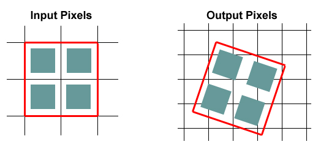

What happens during image reprojection?
Image reprojection involves the redistribution of information from a set of input pixels to a set of output pixels. For astronomical data, the input pixels represent the total energy received from an area on the sky, and it is critical to preserve this information when redistributed into output pixels. Also in astronomy, it is important to preserve the positional (astrometric) accuracy of the energy distribution, so common techniques such as adding all the energy from an input pixel to the "nearest" output pixel are inadequate.
Instead, we must redistribute input pixel energy to the output based on the exact overlap of these pixels, possibly even with a weighting function across the pixels based on the point spread function for the original instrument. The goal is to create an output image which is as close as possible to that which would have been created if the sky had been observed using an instrument with the output image's pixel pattern. We are also committed to building a system which handles all astronomical projections and coordinate systems equally well.
How does Montage handle image reprojections?
The most common approach to determining pixel overlap is to project the input pixel into the output pixel Cartesian space. This works well for some projection transformations but is difficult for others. One example of a difficult transformation is the Aitoff projection, commonly used in astronomy, where locations at the edge of an image correspond to undefined locations in pixel space. For Montage, we have decided instead to project both input and output pixels onto the celestial sphere. Since all such "forward" projections are well defined, the rest of the problem reduces to calculating the area of overlap of two convex polygons on a sphere (with no further consideration of the projections involved). The issue of handling reprojections therefore becomes a problem of classical spherical trigonometry.
Figure 1: The reprojection scheme used in Montage
General algorithms exist for determining the overlap of polygons in Cartesian space [1]. We have modified this approach for use in spherical coordinates to determine the intersection polygon on the sphere (a convex hull) and applied Girard's Theorem, which gives the area of a spherical triangle based on the interior angles, to calculate the polygon's area. Figure 1 illustrates this approach.
The result is that for any two overlapping pixels, we can determine the area of the sky from the input pixel that contributes energy to the output pixel. This provides not only a mechanism for accurately distributing input energy to output pixels but, as we shall see, a natural weighting mechanism when combining overlapping images.
Our approach implicitly assumes that the polygon defining a single pixel can be approximated by the set of great circle segments connecting the pixel's corners. Since even the largest pixels in any realistic image are on the order of a degree across, the non-linearities along a pixel edge are insignificant. Furthermore, the only affect this would have would be to the astrometric accuracy of the energy location information and would amount to a very small fraction (typically less that 0.01) of the size of a pixel. Total energy is still conserved.
The Montage processing scheme is a natural fit with the "drizzle" algorithm developed by STScI.
References:
[1] J. O'Rourke, Computational Geometry in C (Cambridge University Press, 1998). p220. (Chapter 7)
The general reprojection algorithm described above transforms pixel coordinates in the input image to coordinates on the sky, and then transforms that location to output image pixel space. Under certain circumstances, this can be replaced by a much faster algorithm which uses a set of linear equations (though not a linear transform) to transform directly from input pixel coordinates to output pixel coordinates. This alternate approach is limited to cases where both the input and output projections are "tangent plane" (gnomonic, orthographic, etc.), but since these projections are by far the most common, it is appropriate to treat them as a special case.
This "plane-to-plane" approach is based on a library developed at the Spitzer Science Center . When both images are tangent plane, the geometry of the system can be viewed as in Figure 2, where a pair of gnomonic projection planes intersect the coordinate sphere. A single line connects the center of the sphere, the projected point on the first plane and the projected point on the second plane. This geometric relationship results in transformation equations between the two planar coordinate systems that require no trigonometry or extended polynomial terms. As a consequence, the transform is a factor of thirty or more faster than using the normal spherical projection formulae.
A bonus to the plane-to-plane approach is that the computation of pixel overlap is much easier, involving only clipping constraints of the projected input pixel polygon in the output pixel space.
Figure 2: The Principle of Plane-to-plane Reprojection
This approach excludes many commonly-used projections such as "Cartesian" and "zenithal equidistant," and is essentially limited to small areas of few square degrees. Processing of all-sky images, as is almost always the case with projections such as Aitoff, generally requires the slower plane-to-sky-to-plane approach.
There is, however, a technique that can be used for images of high resolution and relatively small extent (up to a few degrees on the sky). Rather than use the given image projection, we can often approximate it with a very high degree of accuracy with a "distorted" Gnomonic projection. In this case, the pixel locations are "distorted" by small distances relative to the plane used in the image projection formulae. A distorted space is one in which the pixel locations are slightly offset from the locations on the plane used by the projection formulae, as happens when detectors are slightly misshapen. This distortion is modeled by pixel-space polynomial correction terms which are stored as parameters in the image FITS header.
While this approach was developed to deal with physical distortions caused by telescope and instrumental effects, it is applicable to Montage in augmenting the plane-to-plane reprojection. Over a small, well-behaved region, most projections can be approximated by a Gnomonic (TAN) projection with small distortions. For instance, in terms of how pixel coordinates map to sky coordinates, a two-degree "Cartesian" (CAR) projection is identical to a TAN projection with a fourth-order distortion term to within about a percent of a pixel width. Figure 3 shows this in exaggerated form for clarity, with the arrows showing the sense of the distortion.
Figure 3: Representation of a WCS projection as a distorted Gnomonic (TAN) projection, exaggerated for clarity. The arrows indicate the sense of the distortions.
In the above example, the curved coordinate grid is an undistorted TAN, and the rectangular grid is both a CAR and the equivalent distorted TAN. This polynomial "correction" plus the plane-to-plane transform is still much faster than the normal reprojection. While this still does not cover all the possible transformations, it does include all those used for very large data collections.
If several images are to be combined into a mosaic, they must all be projected onto a common coordinate system (see above) and then any discrepancies in brightness or background must be removed. Our assumption is that the input images are all calibrated to an absolute energy scale (i.e. brightnesses are absolute and should not be modified) and that any discrepancies between the images are due to variations in their background levels that are terrestrial or instrumental in origin.
The Montage background matching algorithm is based on the assumption that terrestrial and instrumental backgrounds can be described by simple functions or surfaces (e.g. slopes and offsets). Stated more generally, we assume that the "non-sky" background has very little energy in any but the lowest spatial frequencies. If this not the case, it is unlikely that any generalized background matching algorithm will be able distinguish between "sky" and rapidly varying "background"; background removal will then require an approach that depends on a detailed knowledge of an individual data set.
Given a set of overlapping images, characterization of the overlap differences is key to determining how each image should be adjusted before combining them. We take the approach of considering each image individually with respect to it neighbors. Specifically, we determine the areas of overlap between each image and its neighbors, and use the complete set of overlap pixels in a least-squares fit to determine how each image should be adjusted (e.g. what gradient and offset should be added) to bring it "best" in line with it neighbors. Figs 4 and 5 illustrate this approach for the before and after cases.
Figure 4: Montage Background Correction Procedure
Figure 5: Montage Background Correction Results
In practice, we only adjust the image by half this amount, since all the neighbors are also being analyzed and adjusted and we want to avoid ringing in the algorithm. After doing this for all the images, we iterate (currently for a fixed number of times though we may later introduce convergence criteria). The final effect is to have subtracted a low-frequency (currently a gradient/offset) background from each image in such a way that the cumulative image-to-image differences are minimized. To speed the computation (and minimize memory usage), we approximate the gradient and offset values by a planar surface fit to the overlap area difference images rather than perform a least squares fit.
In the reprojection algorithm (described in the pixel overlap discussion above), each input pixel's energy contribution to an output pixel is added to that pixel, weighted by the sky area of the overlap. In addition, a cumulative sum of these sky area contributions is kept for the output pixels (essentially and physically an "area" image). When combining multiple overlapping images, these area images provide a natural weighting function; the output pixel value is simply the area-weighted average of the images being combined.
Such images are in practice very flat (with only slight slopes due to the image projection) since the cumulative effect is that each output pixel is covered by the same amount of input area, regardless of the pattern of coverage. The only real variation occurs at the edges of the area covered, since there an output pixel may be fractionally covered by input pixels.
The limitations of available memory have been simply overcome in co-addition by reading the reprojected images one line at a time from files that reside on disk. Assuming that a single row of the output file does not fill the memory, the only limitation on file size is that imposed by the file system. Images of up to 6 GB have thus far been built with the new software. For each output line, mAdd determines which input files will be contributing pixel values, and opens only those files. Each contributing pixel value is read from the flux and area coverage files, and the value of each of these pixels is stored in an array until all contributing pixels have been read for the corresponding output row. This array constitutes a "stack" of input pixel values; a corresponding stack of area coverage values is also preserved. The contents of the output row are then calculated one output pixel (i.e., one input stack) at a time, by averaging the flux values from the stack.
Different algorithms to perform this average can be trivially inserted at this point in the program. Version 2.x of Montage supports mean and median co-addition, with or without weighting by area. The mean algorithm (default) accumulates flux values contributing to each output pixel, and then scales them by the total area coverage for that pixel. The median algorithm ignores any pixels whose area coverage falls below a specific threshold, and then calculates the median flux value from the remainder of the stack.
If there are no area files, then the algorithm gives equal weight to all pixels. This is valuable for science data sets where the images are already projected into the same pixel space (e.g., MSX). An obvious extension of the algorithm is to support outlier rejection, and this is planned for a future release as an enhancement.
The Space Telescope Science Institute (STScI) has developed a method for the linear reconstruction of an image from undersampled, dithered data. The algorithm, known as Variable-Pixel Linear Reconstruction (or informally as "drizzling"), is conceptually simple. Pixels in the original input images are mapped into pixels in the subsampled output image, taking into account shifts and rotations between images and any projection/distortion issues. However, in order to avoid convolving the input with the large pixel "footprint" of the output, the pixel is "shrunken" (by a user-defined amount) before it is averaged into the output image.
This is particularly easy to do in Montage. Since the Montage algorithm projects the corners of each pixel onto the sky, implementing drizzle boils down to simply using a different set of corners. For instance, if a pixel covers the area from (3.5, 11.5) to (4.5,12.5) in FITS pixel coordinates and we introduce a drizzle shrinkage factor of 0.8, Montage will use an equivalent pixel from (3.6, 11.6) to (4.4, 12.4) and project this instead. In other words, the flux is modelled as all coming from a box centered on the original pixel but smaller (in linear dimension) by the drizzle factor. The Montage "area" images automatically take care of weighting issues raised by the use of drizzle.

Drizzle treats the input pixels as if their flux was distributed over a smaller area (green boxes) than true pixel area (white boxes).
This figure shows a group of four pixels with a drizzle factor of around 0.7.